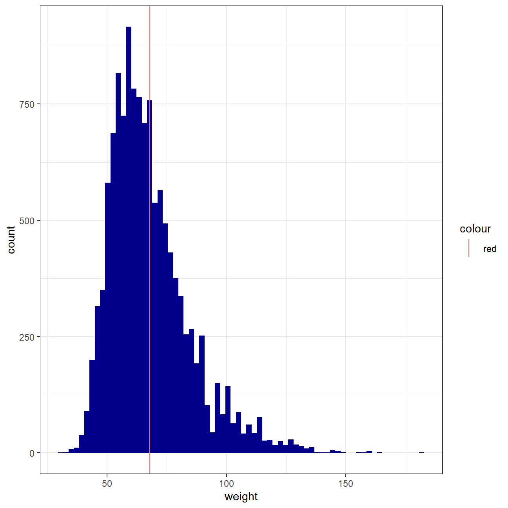
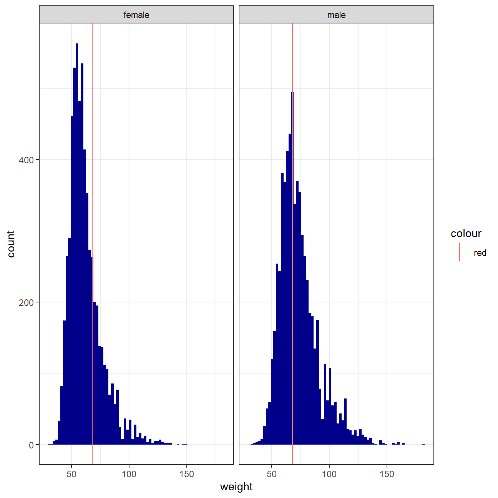
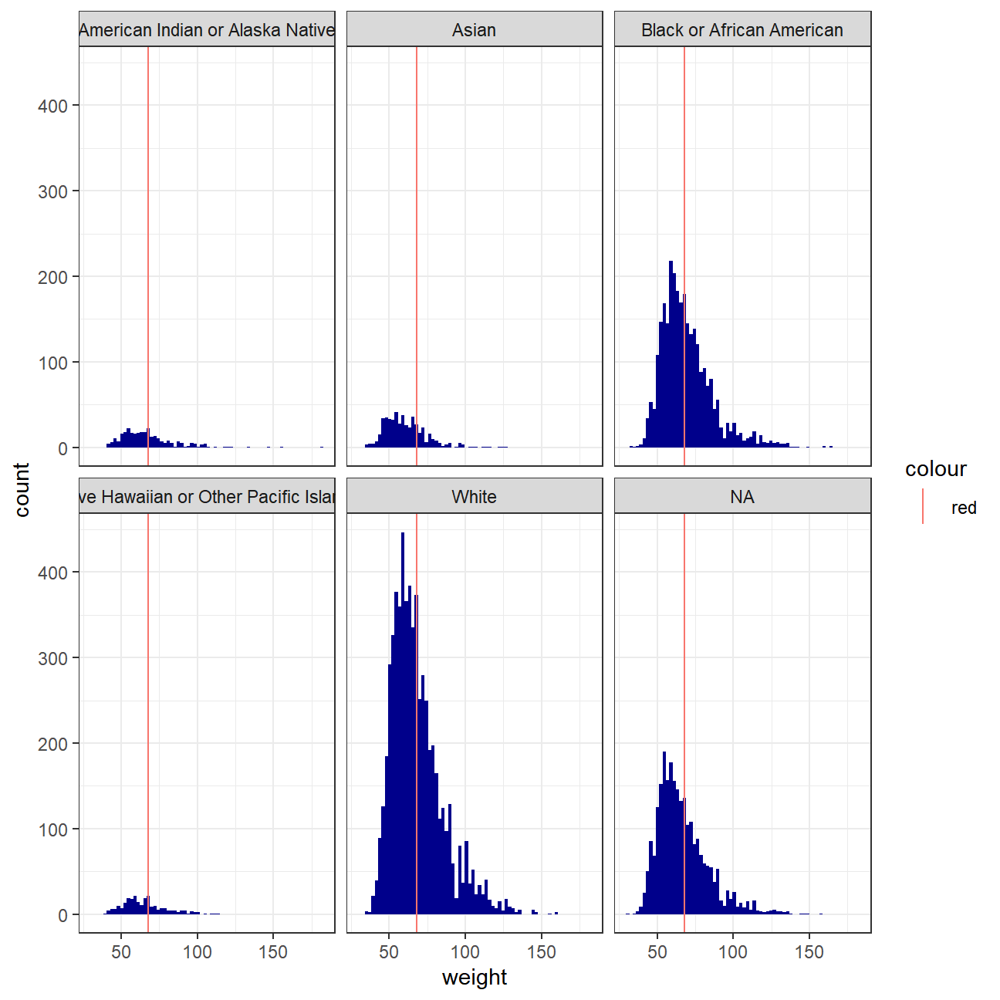
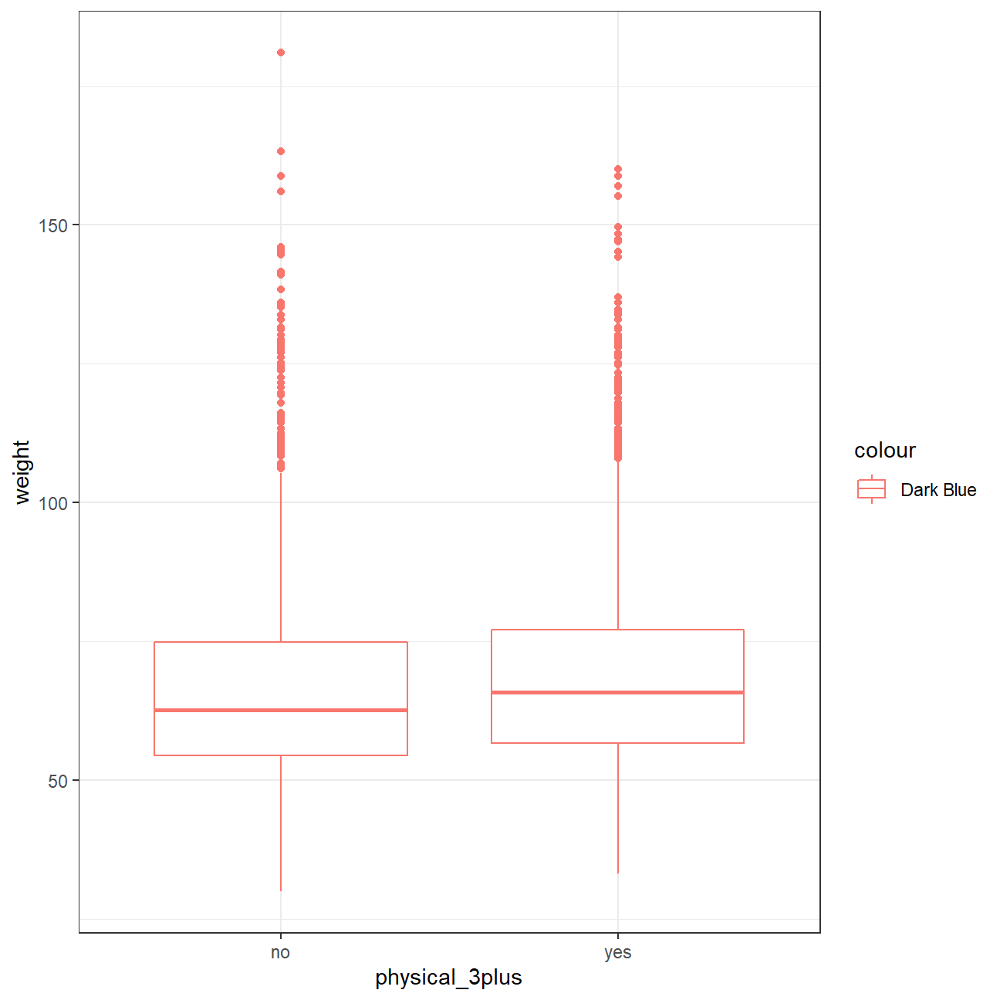
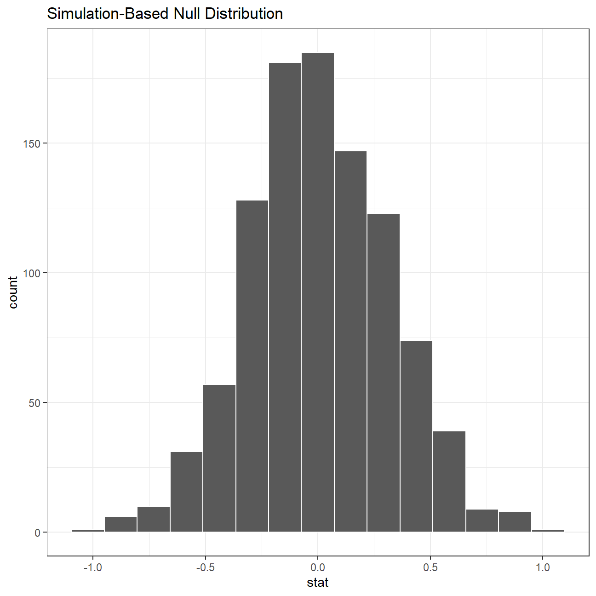
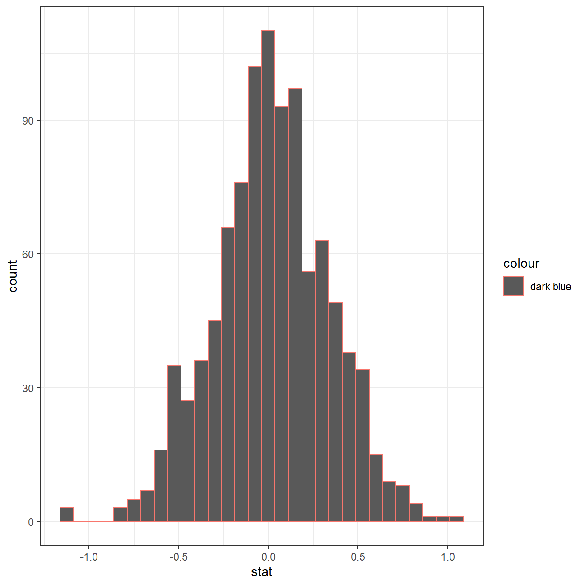
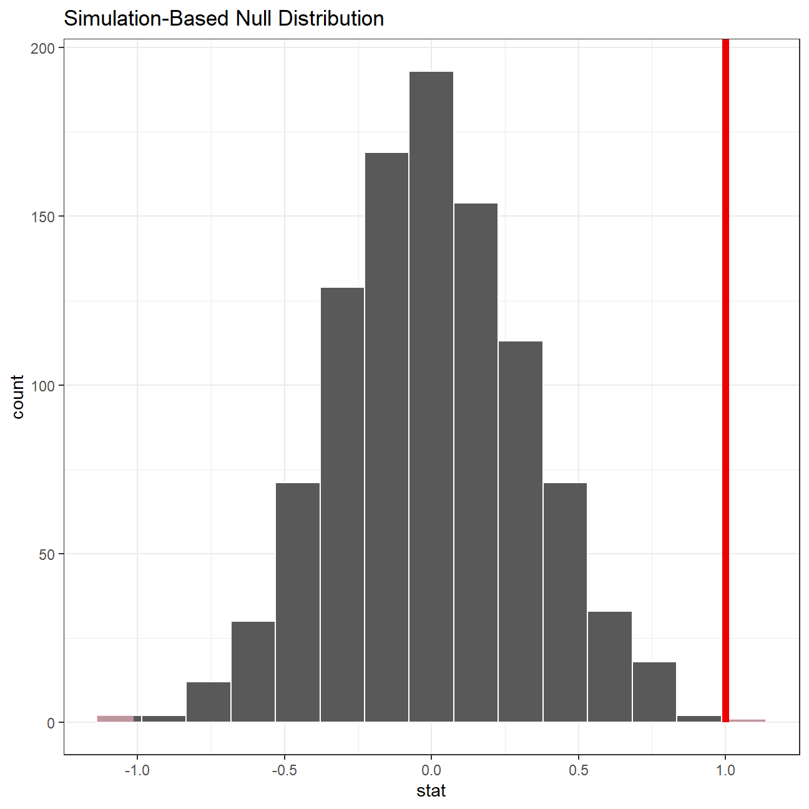

Every two years, the Centers for Disease Control and Prevention conduct the Youth Risk Behavior Surveillance System (YRBSS) survey, where it takes data from high schoolers (9th through 12th grade), to analyze health patterns. You will work with a selected group of variables from a random sample of observations during one of the years the YRBSS was conducted.
This data is part of the openintro textbook and we can load and inspect it. There are observations on 13 different variables, some categorical and some numerical. The meaning of each variable can be found by bringing up the help file:
?yrbss
?yrbss
data(yrbss)
glimpse(yrbss)## Rows: 13,583
## Columns: 13
## $ age <int> 14, 14, 15, 15, 15, 15, 15, 14, 15, 15, 15...
## $ gender <chr> "female", "female", "female", "female", "f...
## $ grade <chr> "9", "9", "9", "9", "9", "9", "9", "9", "9...
## $ hispanic <chr> "not", "not", "hispanic", "not", "not", "n...
## $ race <chr> "Black or African American", "Black or Afr...
## $ height <dbl> NA, NA, 1.73, 1.60, 1.50, 1.57, 1.65, 1.88...
## $ weight <dbl> NA, NA, 84.4, 55.8, 46.7, 67.1, 131.5, 71....
## $ helmet_12m <chr> "never", "never", "never", "never", "did n...
## $ text_while_driving_30d <chr> "0", NA, "30", "0", "did not drive", "did ...
## $ physically_active_7d <int> 4, 2, 7, 0, 2, 1, 4, 4, 5, 0, 0, 0, 4, 7, ...
## $ hours_tv_per_school_day <chr> "5+", "5+", "5+", "2", "3", "5+", "5+", "5...
## $ strength_training_7d <int> 0, 0, 0, 0, 1, 0, 2, 0, 3, 0, 3, 0, 0, 7, ...
## $ school_night_hours_sleep <chr> "8", "6", "<5", "6", "9", "8", "9", "6", "...skim(yrbss)| Name | yrbss |
| Number of rows | 13583 |
| Number of columns | 13 |
| _______________________ | |
| Column type frequency: | |
| character | 8 |
| numeric | 5 |
| ________________________ | |
| Group variables | None |
Variable type: character
| skim_variable | n_missing | complete_rate | min | max | empty | n_unique | whitespace |
|---|---|---|---|---|---|---|---|
| gender | 12 | 1.00 | 4 | 6 | 0 | 2 | 0 |
| grade | 79 | 0.99 | 1 | 5 | 0 | 5 | 0 |
| hispanic | 231 | 0.98 | 3 | 8 | 0 | 2 | 0 |
| race | 2805 | 0.79 | 5 | 41 | 0 | 5 | 0 |
| helmet_12m | 311 | 0.98 | 5 | 12 | 0 | 6 | 0 |
| text_while_driving_30d | 918 | 0.93 | 1 | 13 | 0 | 8 | 0 |
| hours_tv_per_school_day | 338 | 0.98 | 1 | 12 | 0 | 7 | 0 |
| school_night_hours_sleep | 1248 | 0.91 | 1 | 3 | 0 | 7 | 0 |
Variable type: numeric
| skim_variable | n_missing | complete_rate | mean | sd | p0 | p25 | p50 | p75 | p100 | hist |
|---|---|---|---|---|---|---|---|---|---|---|
| age | 77 | 0.99 | 16.16 | 1.26 | 12.00 | 15.0 | 16.00 | 17.00 | 18.00 | ▁▂▅▅▇ |
| height | 1004 | 0.93 | 1.69 | 0.10 | 1.27 | 1.6 | 1.68 | 1.78 | 2.11 | ▁▅▇▃▁ |
| weight | 1004 | 0.93 | 67.91 | 16.90 | 29.94 | 56.2 | 64.41 | 76.20 | 180.99 | ▆▇▂▁▁ |
| physically_active_7d | 273 | 0.98 | 3.90 | 2.56 | 0.00 | 2.0 | 4.00 | 7.00 | 7.00 | ▆▂▅▃▇ |
| strength_training_7d | 1176 | 0.91 | 2.95 | 2.58 | 0.00 | 0.0 | 3.00 | 5.00 | 7.00 | ▇▂▅▂▅ |
We first start with analyzing the weight of participants in kilograms. Using visualization and summary statistics, describe the distribution of weights.
missing_weight <- yrbss %>%
select(weight) %>%
summarise_all(funs(sum(is.na(.))))
missing_weight## # A tibble: 1 x 1
## weight
## <int>
## 1 1004weight <- yrbss %>%
filter(!is.na(weight)) %>%
select(c(gender, race, weight)) %>%
mutate(mean(weight))
ggplot(weight) +
geom_histogram(aes(x= weight), fill="Dark Blue", bins=70) +
geom_vline(aes(xintercept = mean(weight), color="red"))+
theme_bw()
ggplot(weight) +
geom_histogram(aes(x= weight), fill="Dark Blue", bins=70) +
geom_vline(aes(xintercept = mean(weight), color="red")) +
facet_wrap(~gender)+
theme_bw()
ggplot(weight) +
geom_histogram(aes(x= weight), fill="Dark Blue", bins=70) +
geom_vline(aes(xintercept = mean(weight), color="red")) +
facet_wrap(~race)+
theme_bw()
weight_by_gender <- weight %>%
group_by(gender) %>%
summarize(mean(weight))
weight_by_gender## # A tibble: 2 x 2
## gender `mean(weight)`
## <chr> <dbl>
## 1 female 61.9
## 2 male 73.6weight_by_race <- weight %>%
group_by(race) %>%
summarize(mean(weight))
weight_by_race## # A tibble: 6 x 2
## race `mean(weight)`
## <chr> <dbl>
## 1 American Indian or Alaska Native 67.5
## 2 Asian 61.0
## 3 Black or African American 69.5
## 4 Native Hawaiian or Other Pacific Islander 65.1
## 5 White 68.3
## 6 <NA> 66.9Weight is missing 1004 observations. This can be seen through glimpsing, but for simplicity sake, we created the variable missing_weight.
Secondly, we create a new dataset weight, by excluding the missing weight variables. Then we plot the weight distribution. Once for the population as a whole and then twice facetted (once by gender and once by race). In all three ggplot, we add the average weight of the population as a whole to get an idea of how every group stands with regards to the average.
Looking at the population as a whole, we notice that we are not dealing with a perfect distribution, but rather with a slightly left-skewed dataset. There are quite some people weighing less than the average, but we have a number of outliers who drive the average up. Unsurprisingly the average weight for women lies below the average weight of men. Our new variable weight_by_gender shows that the average female weighs 61.9, while men have an average weight of 73.6. Lastly faceted and grouped by race, we find that Black or African American have the highest average weight of 69.5, while Asian people tend to be the lightest at an average of 61.
Next, consider the possible relationship between a high schooler’s weight and their physical activity. Plotting the data is a useful first step because it helps us quickly visualize trends, identify strong associations, and develop research questions.
Let’s create a new variable physical_3plus, which will be yes if they are physically active for at least 3 days a week, and no otherwise.
yrbss <- yrbss %>%
mutate(physical_3plus = ifelse(physically_active_7d >= 3, "yes", "no"))
yrbss %>% filter(!is.na(physical_3plus)) %>%
group_by(physical_3plus) %>%
summarise(count = n()) %>%
mutate(prop= count/sum(count))## # A tibble: 2 x 3
## physical_3plus count prop
## <chr> <int> <dbl>
## 1 no 4404 0.331
## 2 yes 8906 0.669We can see that 8906 people, or 66.9% of the population is physically active for at least 3 days a week.
We then provide a 95% confidence interval for the population proportion of high schools that are NOT active 3 or more days per week?
physical_CI <- yrbss %>%
filter(!is.na(physical_3plus)) %>%
specify(weight ~ physical_3plus) %>%
generate(reps=10000, type = "bootstrap") %>%
calculate(stat= "diff in means", order= c("yes", "no")) %>%
get_confidence_interval(level=0.95, type= "percentile")
physical_CI## # A tibble: 1 x 2
## lower_ci upper_ci
## <dbl> <dbl>
## 1 1.12 2.42This confidence interval shows that we can be 95% sure that our population mean for people not being active 3 or more days per week falls between [mean - 1.12; mean + 2.43]. In this case, with the average weight being 67.9 (calculated in dataset weight), we can thus be 95% sure that our mean falls between [66,78;70.33].
Then we a boxplot of physical_3plus vs. weight.
physical <- yrbss %>%
filter(!is.na(physical_3plus)) %>%
ggplot(aes(x=physical_3plus, y=weight, color="Dark Blue")) +
geom_boxplot() +
theme_bw()
physical Comparing the two boxplots, we get an answer that seems a little counter-intuitive. Visually speaking, it looks like people who do activity at least three times per week are a little heavier. Reasons for this could be that muscles weight more than fat or that the people who move at least three times a week need the activity to lose weight. Nevertheless, as there is an overlap between the boxes, there is a chance that the population mean is indeed higher for people not being active at least 3 times a week.
Boxplots show how the medians of the two distributions compare, but we can also compare the means of the distributions using either a confidence interval or a hypothesis test.
pre_hypothesis <- yrbss %>%
group_by(physical_3plus) %>%
filter(!is.na(physical_3plus)) %>%
summarise(mean_weight = mean(weight, na.rm = TRUE),
sd_weight = sd(weight, na.rm=TRUE),
count = n(),
se_weight = sd_weight/sqrt(count),
t_critical = qt(0.975, count-1),
margin_of_error = t_critical * se_weight,
lower = mean_weight - t_critical * se_weight,
upper = mean_weight + t_critical * se_weight
)
pre_hypothesis## # A tibble: 2 x 9
## physical_3plus mean_weight sd_weight count se_weight t_critical
## <chr> <dbl> <dbl> <int> <dbl> <dbl>
## 1 no 66.7 17.6 4404 0.266 1.96
## 2 yes 68.4 16.5 8906 0.175 1.96
## # ... with 3 more variables: margin_of_error <dbl>, lower <dbl>, upper <dbl>There is an observed difference of about 1.77kg (68.44 - 66.67), and we notice that the two confidence intervals do not overlap. It seems that the difference is at least 95% statistically significant. Let us also conduct a hypothesis test.
Here we write the null and alternative hypotheses for testing whether mean weights are different for those who exercise at least times a week and those who don’t.
#Null hypothesis: We asume difference between 'Yes' and 'No' is zero.
#H0: mean1 = mean2
A <- t.test(weight ~ physical_3plus, data = yrbss)inferNext, we will introduce a new function, hypothesize, that falls into the infer workflow. You will use this method for conducting hypothesis tests.
But first, we need to initialize the test, which we will save as obs_diff.
obs_diff <- yrbss %>%
specify(weight ~ physical_3plus) %>%
hypothesize(null = "independence") %>%
generate(reps=1000, type="permute") %>%
calculate(stat = "diff in means",
order = c("yes", "no"))
obs_diff %>%
visualize() +
theme_bw()
obs_diff %>%
get_p_value(obs_stat= obs_diff,
direction= "both")## # A tibble: 1 x 1
## p_value
## <dbl>
## 1 0.002After we have initialized the test, we need to simulate the test on the null distribution, which we will save as null.
null_dist <- yrbss %>%
specify(weight ~ physical_3plus) %>%
hypothesize(null = "independence") %>%
generate(reps = 1000, type = "permute") %>%
calculate(stat = "diff in means", order = c("yes", "no"))Here, hypothesize is used to set the null hypothesis as a test for independence, i.e., that there is no difference between the two population means. In one sample cases, the null argument can be set to point to test a hypothesis relative to a point estimate.
Also, the type argument within generate is set to permute, which is the argument when generating a null distribution for a hypothesis test.
We can visualize this null distribution with the following code:
ggplot(data = null_dist, aes(x = stat, color= "dark blue")) +
geom_histogram() +
theme_bw()
We can also calculate the p-value for your hypothesis test using the function infer::get_p_value().
null_dist %>% visualize() +
theme_bw()+
shade_p_value(obs_stat = obs_diff, direction = "two-sided")
null_dist %>%
get_p_value(obs_stat = obs_diff, direction = "two_sided")## # A tibble: 1 x 1
## p_value
## <dbl>
## 1 0.002This the standard workflow for performing hypothesis tests.